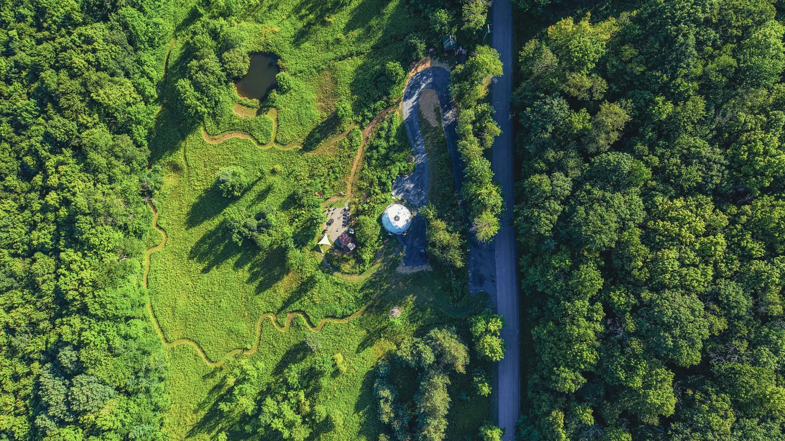

A white dome on a mountain in the Catskills, built by hand, kept with care, and loved by the people who have stayed. 252 of them have written about it so far.
Every place on the mountain has its own card, its own guests’ words, and one thing to do there.
252 guests who wrote about their stay, 2023 to now. Touch a star to read what they wrote. The warmer stars are the guests of the new chapter.
Choose one and the whole site changes with it. Where we don’t yet have a photo from that season, the picture is marked as imagined.
Six stories told only in guests’ own words.
A guest asks for something, Eric and Mona build it, and the guest’s name goes on it.
See the open nights and the whole price, and book directly with Eric and Mona.